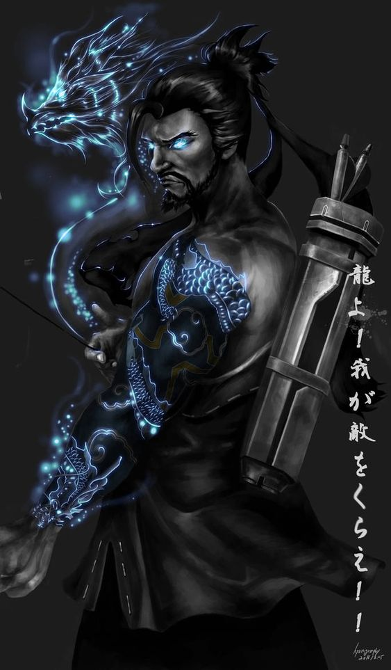

| Leviatan | Envy/ Iri hati | ||||
|  |
|
||||
|
Leviathan adalah salah satu dari tujuh pangeran dari neraka dan pintu neraka ada di mulutnya (Hellmouth). Leviathan identik dengan rakasa laut besar. Leviathan adalah salah satu setan yang dikatakan untuk menggoda laki-laki dalam melakukan penghujatan. Penghujatan ini bisa diartikan karena alasan dendam yang timbul karena iri atau dengki dengan sesuatu hal. | ||||